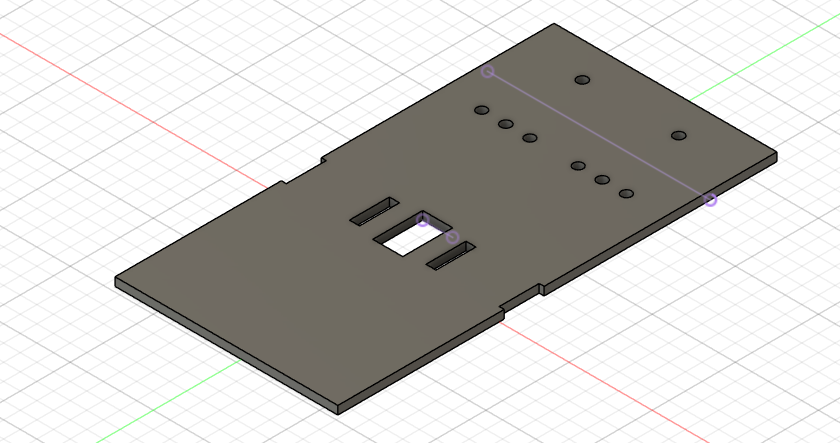
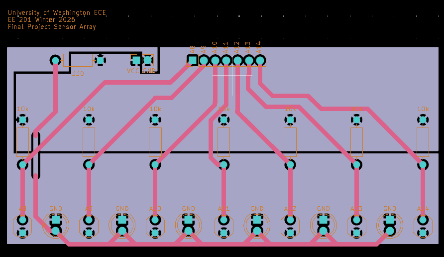
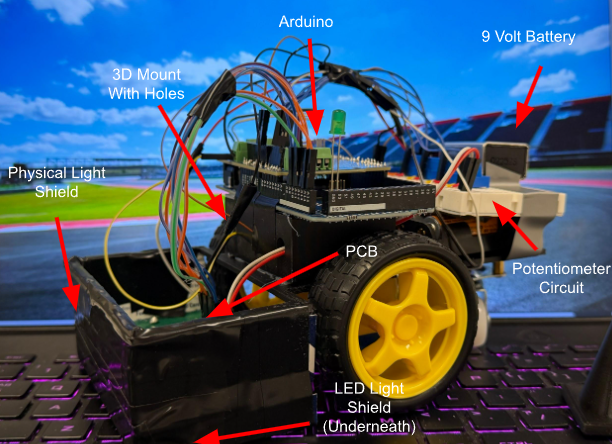

From breadboard prototype to a working robot.
This project focused on designing and building a line-following robot using an Arduino Mega, DC motors, and light sensors. The goal was to create a robot that could detect a line on the ground and automatically adjust its movement to stay on track. The robot used photoresistors to detect differences between dark and light surfaces, then adjusted motor speed to remain aligned with the path.
We began by building and testing sensor circuits with photoresistors and potentiometers on a breadboard. Later, we designed a custom KiCad PCB for the photoresistors to improve how the robot read light values, and we created a custom chassis in Fusion 360. Once the chassis and PCB were fabricated, we assembled the robot and developed the calibration and line-following code.
The robot required significant debugging. One major issue was inconsistent photoresistor readings, which prevented the robot from detecting the track properly. After troubleshooting, we found that the issue was caused by poor soldering; once the faulty connection was repaired, the robot successfully completed the full track and made the leaderboard with a time of 1 minute and 10 seconds.



Completed the full track and reached the leaderboard (6th fastest course-time) with a time of 1 minute and 10 seconds.
Testing sensors, building hardware, and debugging the system.
The robot development process began with circuit testing on a breadboard to understand how the potentiometers and photoresistors behaved. A potentiometer circuit was assembled and connected to the Arduino so changes in resistance could be observed through the Serial Monitor. This showed that rotating the potentiometer clockwise decreased the measured values, while rotating it in the opposite direction increased them.
Next, a photoresistor circuit was built on the breadboard to evaluate how the sensors responded to changes in light intensity. From this testing, we determined that the photoresistors were highly sensitive to ambient light and performed best when positioned as close to the surface as possible without making contact. This finding helped guide final sensor placement so the robot could accurately detect contrast between the track and surrounding surface.
After gaining a better understanding of the sensors, a mock robot was assembled using a premade chassis. This prototype included two breadboards, an Arduino, two DC motors, wheels, and a 6 V battery pack. The mock robot helped test component placement and evaluate how the electrical and mechanical systems would fit together before the final design was built.
A custom PCB was then designed in KiCad based on the photoresistor breadboard circuit. This PCB provided a more permanent and organized sensor system. Green LEDs were added to the PCB as a light-shielding feature to improve the consistency and accuracy of the photoresistor readings.
Following the PCB design, a custom chassis was created in Fusion 360. The chassis was intentionally kept minimal to reduce weight and improve the robot's speed, while still allowing room for future modifications. After the chassis and PCB were fabricated, the team assembled the final robot and added a small 3D-printed mount for wire routing and Arduino support.
Additional improvements were made to the power system and sensor shielding. A 9 V battery was added so motor power and Arduino power could be supplied separately, improving the robot's ability to travel across the full track. A physical light shield was also added to improve photoresistor reliability; the first version was made from cardboard, then replaced with a thinner and lighter material.
Solving inconsistent sensor readings.
During testing, one photoresistor produced readings that were significantly different from the other six sensors. This caused the robot to make inaccurate turns and sometimes fail to detect whether it was on or off the track. Adjusting the potentiometers initially caused no noticeable change in performance, which indicated another issue in the system.
First, the team tried modifying the code to ignore the faulty photoresistor, but this reduced the robot's turning accuracy even further. The wiring was then inspected, and the potentiometers were found to be connected incorrectly to the Arduino. After correcting the wiring, the team investigated the robot's internal connections and identified a soldering issue as the source of the faulty sensor readings.
The defective photoresistor and its associated wiring were resoldered, restoring accurate sensor output. After reassembly and additional testing, the sensor readings became consistent and the robot successfully followed the line. Final adjustments were made to the potentiometer and control values, allowing the robot to complete the entire track.